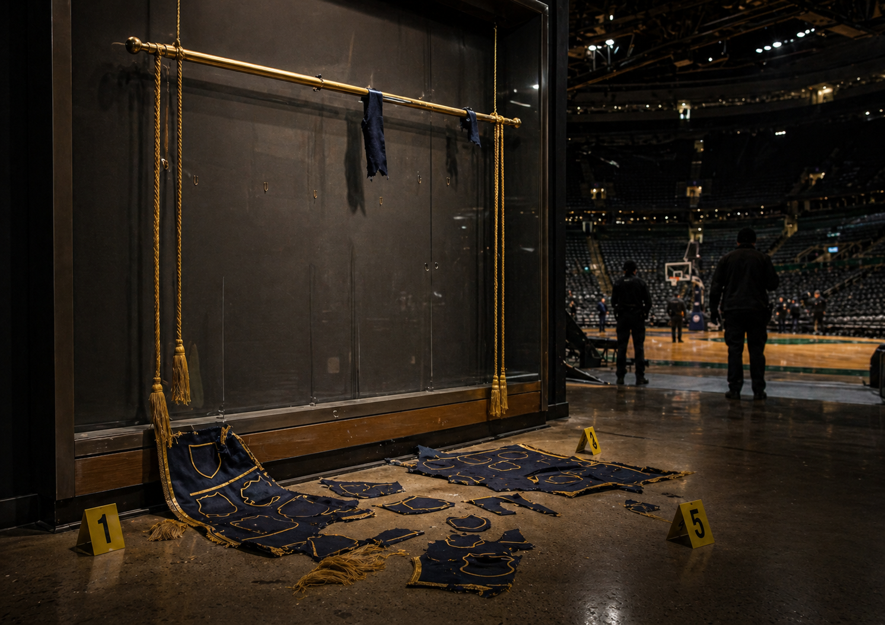
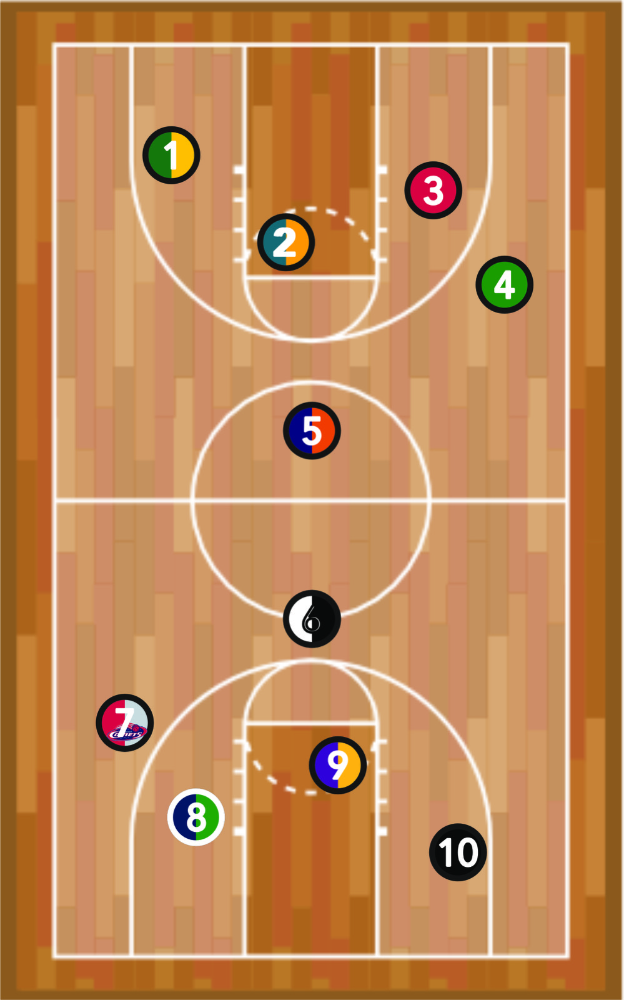
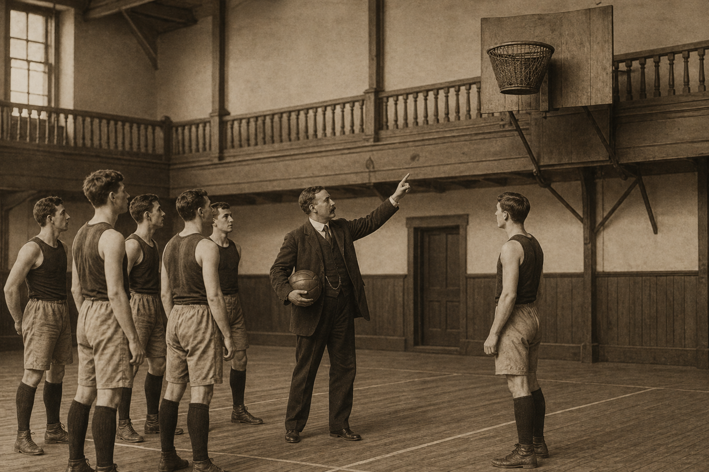
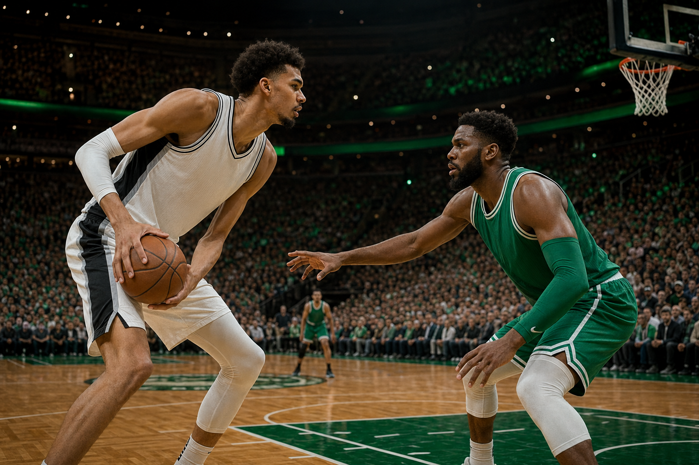
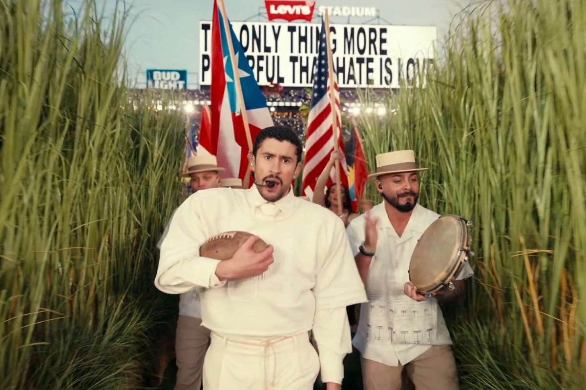
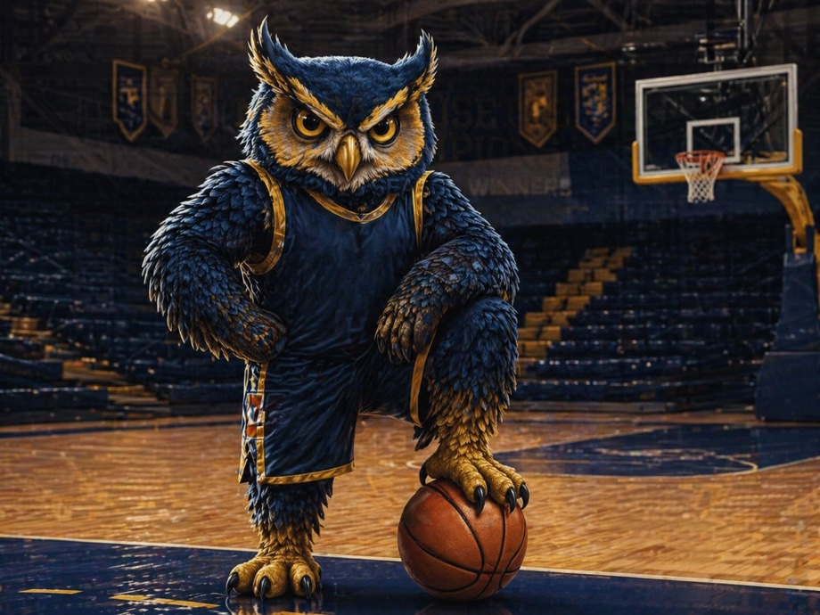
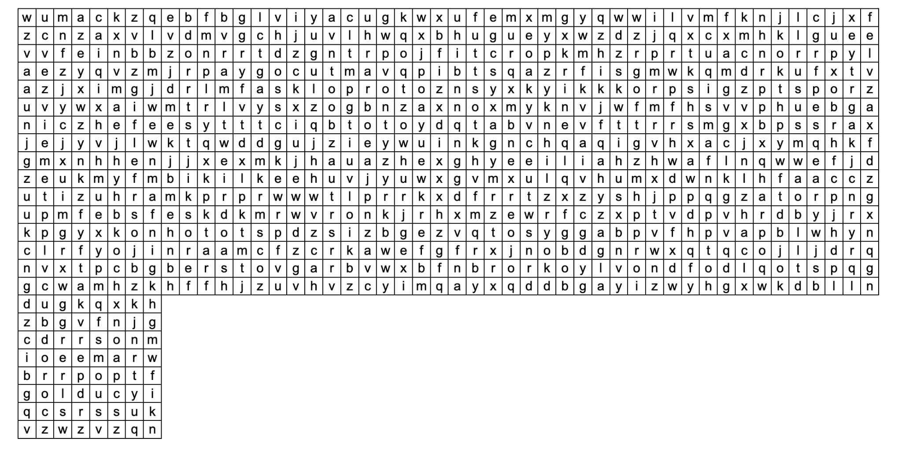
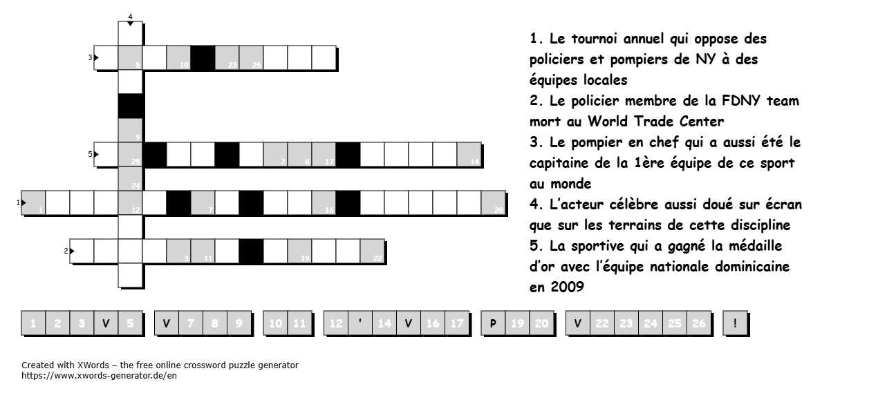

Le surnom circule depuis l'aube. Il évoque ces casses spectaculaires où vitrine, monte-charge et fuite en deux-roues transforment le vol en récit public. Les enquêteurs restent prudents, mais la piste file déjà vers l'ouest du Massachusetts.
L’ÉQUIPE
Boston | Edition spéciale du 30 Mai 2026

Cette nuit au TD Garden
LA BANNIÈRE DES CHAMPIONS A DISPARU
Le TD Garden s'est réveillé sans son emblème. La Bannière des Champions du Massachusetts aurait été retirée de sa vitrine après une extinction partielle. Des attaches et des pièces textiles retrouvées au sol laissent penser à un démontage méthodique.
Ni simple coupe, ni décor de tribune: la bannière réunit les couleurs d'équipes qui ont façonné la région, des parquets aux patinoires, des stades aux campus. Sa disparition touche autant les vestiaires que les gradins.
La salle volée n'a pas le temps de se taire: San Antonio arrive avec Wembanyama, Boston répond avec son collectif vert. Le choc NBA donnera au journal son grand décor sportif.
Rapport de vol
Extinction partielle, monte-charge et départ à moto
La nuit du casse dessine une opération courte, organisée autour des accès de service. La bannière n'aurait pas quitté la salle d'un seul tenant.
Peu après le passage de l'enceinte en éclairage réduit, une activité inhabituelle est signalée près d'un couloir technique. La vitrine de la Bannière des Champions du Massachusetts est ensuite découverte ouverte. Aucun mouvement de foule, aucun bris spectaculaire: seulement un vide, des attaches au sol et la sensation d'un geste préparé.
Les enquêteurs appelés depuis Boston s'intéressent particulièrement au monte-charge reliant les zones arrière. C'est là que plusieurs témoins disent avoir entendu un bruit métallique, puis un moteur lointain. Quelques minutes plus tard, un deux-roues puissant, peu courant à Boston, aurait été entendu près des abords du Garden.
Lorsque la police arrive, bientôt suivie par des agents fédéraux, la piste n'est déjà plus seulement bostonienne. Plusieurs éléments orientent les recherches vers l'ouest du Massachusetts, avant un échange avec des équipes françaises familières de signatures de casse plus théâtrales que discrètes.
La salle passe en mode nuit. Une présence est notée près des accès techniques.
Un accrochage métallique est entendu dans les circulations arrière.
Un deux-roues puissant, peu courant à Boston, est entendu puis signalé sur un axe secondaire.
La zone est isolée, les images copiées, la piste élargie hors de Boston.
Profil
Doudou Grosse Bitume, un nom qui voyage plus vite que le dossier
Le pseudonyme amuse les réseaux, mais il décrit surtout une silhouette de récit: un casseur qui connaît la puissance des objets symboliques.
Doudou Grosse Bitume
Une signature plus qu'un visage
Dans les premières heures, le nom revient avec insistance. Il ne désigne pas une personne identifiée publiquement; il fonctionne comme le surnom d'un personnage de casse, né d'images partielles, de récits de couloir et d'une fuite assez voyante pour devenir une histoire.
Le choix du TD Garden n'a rien d'anodin. Faire disparaître une bannière de champions dans une salle où cohabitent basketball, hockey et mémoire de Boston revient à toucher une vitrine entière du sport local.
Le dossier prend assez d'ampleur pour être transmis à des équipes françaises déjà familières de ce type de mise en scène. Dans leur lecture, Doudou Grosse Bitume n'est pas seulement un voleur: c'est quelqu'un qui veut que le vol parle.
Basket | TD Garden
Spurs-Celtics: Wembanyama défie la forteresse verte
Ce soir, le TD Garden accueille une affiche qui dépasse le calendrier: Boston avance avec son collectif installé, San Antonio avec Victor Wembanyama et une génération qui grandit vite.
Une soirée pour mesurer deux époques
Boston reçoit San Antonio avec cette autorité particulière des équipes qui savent défendre chaque possession. Les Celtics veulent imposer leur rythme, verrouiller la raquette et pousser les Spurs à tirer loin de leurs zones préférées.
En face, Wembanyama oblige tout le monde à lever les yeux. Sa taille modifie les tirs, ses passes déplacent les aides, et chaque ballon touché donne au Garden l'impression d'observer le futur en direct.

Vestiaire NBA
Dix cercles pour lire les couleurs du basket
La carte du parquet propose une lecture visuelle des maillots, des héritages et des silhouettes qui peuplent l'imaginaire NBA.
| Rond | Couleurs | Club pressenti | N° légende |
|---|---|---|---|
| 1 | Vert & jaune | ||
| 2 | Bleu turquoise & orange | ||
| 3 | Rouge | ||
| 4 | Vert | ||
| 5 | Bleu & orange | ||
| 6 | Blanc & noir | ||
| 7 | Rouge, bleu clair & blanc | ||
| 8 | Bleu marine & vert | ||
| 9 | Violet & jaune | ||
| 10 | Noir |
Avant Wembanyama, Tony Parker a montré qu'un meneur français pouvait gagner, durer et peser sur une dynastie NBA. San Antonio garde cette mémoire dans son ADN.
Boston aime les talents, mais son histoire récompense surtout les cinq qui jouent comme un seul bloc: défense, spacing, relance et sang-froid.
Volleyball | Archives
1895: William Morgan donne un autre rythme au ballon
Un professeur d'éducation physique imagine une discipline moins heurtée que le basketball naissant. Son premier nom: mintonette.
Un sport né pour faire circuler le jeu
William G. Morgan travaille au YMCA quand il met au point une nouvelle pratique. Le principe est simple: faire passer un ballon au-dessus d'un filet, maintenir l'échange, organiser le collectif.
Le volleyball gardera de cette origine un mélange rare: précision du geste, communication constante, alternance entre défense et attaque.
La mintonette remplit les tribunes
Plus de 92 000 personnes ont assisté à un match de mintonette du championnat universitaire américain au Memorial Stadium de Lincoln, dans le Nebraska, établissant un record mondial d'affluence pour un événement sportif féminin.
La rencontre a réuni 92 003 spectateurs et s'est conclue par la victoire nette des Huskers sur Omaha, trois manches à zéro. Les organisateurs voulaient montrer que le sport féminin pouvait remplir un stade entier; le pari a tenu.
Le nom ancien du volleyball revient ainsi sur le devant de la scène. Inventée par William Morgan en 1895, la mintonette devait offrir un jeu collectif plus souple que le basketball naissant. Elle est devenue un sport mondial.
Le précédent repère d'affluence pour une telle rencontre était très loin derrière. Le chiffre de Lincoln donne au volleyball une image nouvelle: celle d'un sport capable de rassembler une foule de finale.
Cahier technique
Réception, passe, attaque: la mécanique d'un point
Le volleyball se comprend comme une chaîne de responsabilités. Une balle mal reçue limite la passe; une passe imprécise réduit l'attaque.
Service
Réception
Passe
Attaque
Bloc
Défense
La force du lien
Dans le basket, un joueur peut parfois éclairer une possession. Au volley, la balle impose une dépendance immédiate: presque chaque action prépare celle d'un autre.
C'est ce qui rend la mintonette centrale dans cette édition. Elle rappelle que le sport n'est pas seulement affaire de vitesse ou de puissance; c'est aussi l'art de rendre le prochain geste possible.
Deux équipes se font face de part et d'autre d'un filet.
Le ballon doit passer au-dessus du filet sans être porté.
Chaque camp dispose d'un nombre limité de touches avant de renvoyer le ballon.
Le service lance l'échange depuis l'arrière du terrain.
Un point peut naître d'une attaque, d'un bloc ou d'une faute adverse.
Le collectif compte autant que la puissance: réception, passe et attaque forment le trio de base.
Histoire du basket
Un ballon, deux paniers et une idée devenue mondiale
Le basketball naît d'un besoin très simple: inventer un jeu d'intérieur assez rapide pour captiver, assez réglé pour éviter la mêlée.
Treize lignes pour cadrer le chaos
James Naismith imagine une règle fondatrice: avancer par la passe plutôt que par la course ballon en main. Le jeu gagne tout de suite son rythme: lever la tête, se démarquer, tirer haut.
Les premiers paniers sont fermés, le ballon doit être récupéré après chaque réussite. Le détail paraît étrange aujourd'hui; il rappelle surtout que le sport s'est construit par ajustements, jusqu'à devenir un langage compris partout.
De la salle d'hiver aux arènes modernes
Le basket américain s'est ensuite nourri des campus, des quartiers, des ligues professionnelles et de la télévision. La NBA a transformé ses meilleurs joueurs en repères culturels, sans effacer la logique première: cinq joueurs, un ballon, un espace à lire.
Dans cette édition, le duel Spurs-Celtics prolonge ce fil: une invention de gymnase devenue spectacle mondial, capable de remplir le Garden et de déplacer toute une ville autour d'un parquet.
1891
Premières règles rédigées
13
Règles initiales
5
Joueurs par équipe
Archives | Basketball
Naismith, treize règles et deux paniers de pêches
En 1891, James Naismith cherche un jeu d'hiver capable d'occuper ses élèves sans transformer le gymnase en mêlée permanente.

-
1
Le ballon peut être lancé dans n'importe quelle direction avec une ou deux mains.
-
2
Le ballon peut être frappé dans n'importe quelle direction avec une ou deux mains, jamais avec le poing.
-
3
Un joueur ne peut pas courir avec le ballon et doit le relancer depuis l'endroit où il le reçoit.
-
4
Le ballon doit être tenu dans ou entre les mains, sans usage des bras ou du corps pour le porter.
-
5
Aucune charge, tenue, poussée, crochetage ou frappe n'est autorisée.
-
6
Une faute est comptée quand un joueur frappe le ballon du poing ou enfreint les règles de contact.
-
7
Trois fautes consécutives d'une même équipe donnent un point à l'adversaire.
-
8
Un point est marqué quand le ballon entre dans le panier et y reste.
-
9
Quand le ballon sort, il est remis en jeu par la première personne qui le touche.
-
10
L'arbitre juge les joueurs, note les fautes et peut exclure un joueur.
-
11
Le juge de touche décide quand le ballon sort et chronomètre le jeu.
-
12
Le match comprend deux mi-temps de quinze minutes séparées par cinq minutes de repos.
-
13
L'équipe qui marque le plus de points gagne.
NBA
La NBA entre héritage et nouvelle ère
Le championnat vit une période rare: anciennes dynasties, jeunes stars déjà installées et talents hors norme se croisent chaque soir.

Le futur vertical
Wembanyama force chaque attaque à lever les yeux. Même sans ballon, sa présence déplace les trajectoires, les passes et les décisions.
Le poids des franchises
Boston, Denver, Milwaukee ou Golden State savent qu'une saison ne se juge pas à l'éclat d'un mois, mais à la solidité d'un printemps.
Le fil Parker
Tony Parker a rendu plausible une grande carrière française en NBA. Wembanyama n'hérite pas d'une exception: il prolonge une voie ouverte.
5
Joueurs par équipe sur le terrain
24
Secondes pour tirer en NBA
3
Points derrière l'arc
Boston
Boston, capitale américaine de la ferveur
Ici, les Celtics, les Red Sox, les Bruins et les Patriots occupent une place à part dans la mémoire collective. Les couleurs changent, la fidélité reste.
Des salles qui parlent avant le coup d'envoi
Le TD Garden, Fenway Park ou les routes du marathon racontent une même histoire: celle d'une ville exigeante, parfois rude, toujours fidèle. A Boston, gagner compte; appartenir à une tribune compte presque autant.
Les Patriots ajoutent à cette géographie une banlieue devenue capitale du dimanche. Foxborough a offert à la Nouvelle-Angleterre six titres au Super Bowl et une dynastie qui a installé le football américain dans le langage local.

Le vert comme signature
Les Celtics donnent au Garden une identité immédiatement reconnaissable, entre parquet clair et bannières historiques.
Les Patriots, six bagues et un territoire
La franchise de Foxborough a transformé la Nouvelle-Angleterre en place forte du football américain moderne.
Matchs mythiques | Massachusetts
Quatre soirs où la région a basculé
Le Massachusetts ne garde pas seulement des titres: il conserve des fins de match, des bruits de salle et des gestes qui ont changé la suite.
Celtics-Lakers, la chaleur d'un Game 7
Le 12 juin 1984, Boston ferme la série contre Los Angeles dans un Garden irrespirable. Victoire 111-102, Larry Bird élu MVP des Finales, Cedric Maxwell immense dans les minutes dures: la rivalité Celtics-Lakers retrouve alors son épaisseur historique.
La nuit où les Red Sox refusent la fin
Menés trois matchs à zéro par les Yankees, les Red Sox sauvent leur saison le 17 octobre 2004. Dave Roberts vole la deuxième base, Bill Mueller égalise, David Ortiz conclut en douzième manche. Fenway vient d'ouvrir la plus folle remontée du baseball moderne.
Bobby Orr s'envole pour toujours
Le 10 mai 1970, les Bruins battent St. Louis 4-3 en prolongation. Bobby Orr marque, trébuche dans l'élan et reste suspendu sur l'image la plus célèbre du hockey bostonien. Une coupe, un but, une photo: parfois un sport tient dans un fragment de seconde.
Le Snow Bowl, neige et nerfs d'acier
Dans la tempête du 19 janvier 2002, Patriots-Raiders devient le match de la règle du tuck. Adam Vinatieri égalise sur un coup de pied invraisemblable dans la neige, puis New England gagne 16-13 en prolongation. La dynastie naît presque dans le blizzard.
111-102
Celtics-Lakers, Game 7 1984
6-4
Red Sox-Yankees, douze manches
4-3
Bruins-Blues, but d'Orr
16-13
Patriots-Raiders dans la neige
Matchs mythiques | Massachusetts
Du Garden à Harvard, les matchs qui restent
Certaines affiches ne vieillissent pas: elles deviennent des repères, transmis de tribune en tribune longtemps après le dernier coup de sifflet.
Le 17e titre revient dans le vacarme
Le 17 juin 2008, les Celtics écrasent les Lakers 131-92 dans le Game 6. Paul Pierce, Kevin Garnett et Ray Allen rendent à Boston un titre attendu depuis 1986. Le Garden ne célèbre pas seulement un score large: il referme vingt-deux ans d'attente.
Bruins-Leafs, le retour impossible
Le 13 mai 2013, Boston est mené 4-1 par Toronto en troisième période du Game 7. Les Bruins arrachent l'égalité, puis Patrice Bergeron marque en prolongation. Le TD Garden voit une série basculer d'un silence lourd à une explosion totale.
Harvard bat Yale, 29-29
Le 23 novembre 1968, Harvard arrache le nul contre Yale après seize points dans les dernières secondes. Le score officiel dit 29-29; le titre du journal étudiant entre dans la légende. Dans le sport universitaire, la mémoire choisit parfois son vainqueur.
Baggio fait lever Foxboro
Le 9 juillet 1994, l'Italie bat l'Espagne 2-1 en quart de finale de Coupe du monde à Foxboro. Roberto Baggio marque tard, les tribunes du Massachusetts découvrent une tension de football mondial, et le stade entre dans une histoire qui dépasse la Nouvelle-Angleterre.
131-92
Celtics-Lakers, titre 2008
5-4
Bruins-Leafs, prolongation
29-29
Harvard-Yale, nul légendaire
2-1
Italie-Espagne à Foxboro
Grandes affiches | Massachusetts
Foxborough, le Garden et les finales qui voyagent
Le Massachusetts n'a pas seulement ses clubs: il reçoit aussi des matchs qui appartiennent à l'histoire nationale du sport américain.
La première finale MLS sous la pluie
Le 20 octobre 1996, la nouvelle ligue américaine choisit Foxborough pour son premier grand rendez-vous. D.C. United remonte deux buts, bat le LA Galaxy 3-2 en prolongation et donne au soccer professionnel moderne une scène fondatrice, trempée jusqu'aux lignes de touche.
Joe-Max Moore ferme le vieux stade
En octobre 2001, les Etats-Unis battent la Jamaïque 2-1 devant 40 483 spectateurs. Joe-Max Moore marque deux fois, l'équipe nationale valide son billet mondial, et Foxboro Stadium vit son dernier grand match de soccer avant de céder la place à Gillette.
Ruiz glace les Revolution
Le 20 octobre 2002, 61 316 spectateurs remplissent Gillette Stadium pour New England contre LA Galaxy. La finale tient jusqu'à la 113e minute, quand Carlos Ruiz marque le but en or. Le Massachusetts découvre qu'une défaite peut aussi devenir un souvenir de stade.
Providence renverse BU sur la glace
Le 11 avril 2015, Providence College bat Boston University 4-3 au TD Garden et décroche son premier titre national de hockey. Un palet mal contrôlé relance la finale, Brandon Tanev tranche peu après: Boston assiste à un renversement de championnat.
3-2
D.C. United-LA Galaxy, 1996
2-1
Etats-Unis-Jamaïque, 2001
1-0
Galaxy-Revolution, 2002
4-3
Providence-Boston University, 2015
Campus
Le sport universitaire, immense réserve de blasons et d'exigence
Harvard, Boston University, Boston College, Northeastern, UMass et Westfield State: autour du Massachusetts, les campus fabriquent des couleurs, des mascottes et des rivalités qui nourrissent la mémoire sportive de la bannière.
H
BU
BC
NU
UM
OW

Des logos au langage des couleurs
Les blasons restent parfois muets, mais leurs couleurs parlent déjà aux habitués des salles.
Un maillot raconte une ville, une époque, une salle et parfois une légende.
Trente-cinq Owls honorés par Chi Alpha Sigma
Westfield State Athletics a annoncé l'entrée de 35 student-athletes dans Chi Alpha Sigma, société nationale d'honneur du sport universitaire.
La sélection distingue des athlètes évoluant au niveau varsity intercollegiate, arrivés au rang junior après cinq semestres à temps plein, avec au moins 3.5 de moyenne cumulative.
Dans la promotion 2026, Joe Thomson représente le basketball masculin des Owls. Le parquet de Westfield rappelle ainsi que l'exigence se joue aussi entre les cours, les entraînements et les soirs de match.
35Owls
3.5moyenne
10eclasse
Endurance | Histoire
Boston Marathon: le plus ancien rendez-vous moderne
Né en 1897 et inspiré par les Jeux d'Athènes, le marathon de Boston est devenu la grande référence annuelle de la distance.
De 1897 à Patriots' Day
Le Boston Marathon est lancé le 19 avril 1897, un an après le marathon olympique d'Athènes. La course s'installe vite comme un rite de printemps, porté par la B.A.A. et par une ville qui aime mesurer l'effort sur la durée.
La B.A.A. le présente comme le plus ancien marathon annuel du monde. Son histoire traverse l'évolution de la distance moderne, du départ originel vers Boston jusqu'au tracé devenu mythique entre Hopkinton, les collines de Newton et Boylston Street.
Charles Miglietti s'inscrit dans cette tradition d'endurance avec un chrono solide: 2h46 au Providence Marathon. Une performance qui dit la constance, la résistance mentale et l'art de ne pas discuter avec la pluie.
Le vieux parc qui garde Boston au présent
Ouvert en 1912, Fenway Park est le plus ancien stade encore utilisé en Major League Baseball. Son Mur vert, son tableau manuel et ses angles serrés donnent aux Red Sox un décor immédiatement reconnaissable: ici, l'histoire ne se visite pas seulement, elle se joue encore.
Culture | Berkshires
Tanglewood, l'été symphonique du Massachusetts
Dans les collines de l'ouest de l'Etat, le sport cède la place à une autre forme de rassemblement: des milliers d'auditeurs, une pelouse, un orchestre et la même tension des grands soirs.
Une scène née du plein air
L'histoire commence au milieu des années 1930, quand les Berkshires cherchent à installer un rendez-vous musical capable d'attirer le Boston Symphony Orchestra hors de la ville. L'idée est simple et audacieuse: faire entendre la grande musique dans un paysage ouvert, devant un public venu autant pour l'orchestre que pour l'expérience d'été.
La propriété Tanglewood est offerte au BSO par la famille Tappan. Le lieu devient rapidement la maison estivale de l'orchestre. Après une saison sous tente, la construction d'un vaste pavillon donne au festival sa silhouette durable: le Shed, associé à Serge Koussevitzky, chef qui voyait dans ce rendez-vous plus qu'une série de concerts.
Tanglewood devient aussi une école. Le Tanglewood Music Center accueille de jeunes musiciens, compositeurs et chefs, transformant le festival en laboratoire vivant. Dans le Massachusetts sportif et universitaire, cette scène rappelle qu'une région se reconnaît aussi à la manière dont elle écoute.
Hockey | Bruins
Buffalo renvoie Boston à la maison
Éliminés en six matchs par les Sabres au premier tour, les Bruins quittent les playoffs sans gloire. Pastrnak, seul survivant d'une série cruelle.
Une élimination qui fait mal
Le TD Garden a vibré pour rien. Le 1er mai 2026, les Buffalo Sabres ont mis fin à la saison des Boston Bruins en remportant le sixième acte de leur série du premier tour 4-1, concluant le duel 4-2 en leur faveur. Une élimination cuisante dans une ville habituée aux succès: Boston quitte les playoffs dès le premier tour pour la deuxième fois en trois ans. L'humiliation du Game 4, déculottée 6-1 à domicile après une première période catastrophique, reste gravée dans les mémoires.
Pastrnak en sauveur, Lyon en muraille
David Pastrnak, capitaine de fait et meilleur pointeur de l'équipe en saison régulière avec 100 points (29 buts, 71 passes), a sauvé l'honneur en prolongation lors du Game 5. Mais le gardien adverse Alex Lyon a été impérial: 1,14 de moyenne et 95,5% d'arrêts sur cinq rencontres. Côté Buffalo, Rasmus Dahlin a mené la charge, offrant aux Sabres leur première qualification en deuxième tour depuis 2007.
100
Points de Pastrnak en saison régulière
4-2
Série remportée par Buffalo
2007
Dernière demi-finale des Sabres avant 2026
Soccer | MLS
La Révolution en marche vers le Mondial
2e de la Conférence Est, les Revolution vivent un printemps en feu. Et Gillette Stadium sera au cœur de la Coupe du Monde 2026.
Carles Gil, cœur battant du Massachusetts
Il n'y a pas qu'au TD Garden que Boston joue la gagne. À Foxborough, les New England Revolution caracolent en tête de l'Est avec 6 victoires, 1 défaite et 3 nuls après dix journées. Le 2 mai, le capitaine Carles Gil a sauvé les meubles d'un penalty dans le temps additionnel face à Charlotte FC, son cinquantième but en MLS dans sa 200e apparition. L'Espagnol reste le moteur d'une équipe qui score à un rythme de 2 buts par match, deuxième meilleur ratio de l'histoire du club.
Foxborough, capitale d'été 2026
Pour un public français installé à Boston, la dynamique du soccer américain se lit en chiffres. La MLS compte 30 franchises et diffuse ses matchs sur Apple TV+ dans le monde entier. Gillette Stadium, 64 628 places, accueillera cet été 7 matchs de la Coupe du Monde FIFA 2026 (11 juin–19 juillet), dont un quart de finale le 9 juillet. La France de Mbappé et Dembélé pourrait fouler la pelouse du Massachusetts. Les billets sont déjà épuisés.
50
Buts en MLS pour Gil (200e match)
7
Matchs Mondial 2026 à Gillette
25 000
Capacité du futur stade Revolution
Hockey féminin | PWHL
Les Fleet font trembler le TD Garden
17 850 spectateurs, record américain de la PWHL. Boston Fleet joue les playoffs et change l'histoire du hockey féminin pro.
Un sold out qui fait date
Le 11 avril 2026, le TD Garden n'était plus seulement la maison des Celtics et des Bruins. Sold out depuis des semaines, l'arène de 17 850 places a accueilli son premier match de la Professional Women's Hockey League. Avec lui, un record d'affluence pour la discipline aux États-Unis. Boston Fleet contre Montréal Victoire: une rencontre au sommet du classement, dans une atmosphère que le hockey féminin n'avait jamais connue en sol américain.
Frankel, l'or olympique au filet
La Fleet a terminé la saison régulière 2025-26 avec 62 points en 30 matchs, 2e rang derrière Montréal, encaissant seulement 45 buts: meilleure défense de la ligue. Le crédit revient à la gardienne Aerin Frankel, auteure d'un record absolu en PWHL avec 8 blanchissages, elle qui sortait d'une médaille d'or avec Team USA aux Jeux olympiques de Milan-Cortina 2026 (5-0). En playoffs face à Ottawa, la série est lancée au Tsongas Center de Lowell.
17 850
Spectateurs au TD Garden, record US PWHL
8
Blanchissages de Frankel, record PWHL
+17%
Hausse d'affluence saison 2025-26
Football US | Patriots
Patriots: reconstruire autour de Maye
Super Bowl perdu, draft sous pression. Les Patriots ont choisi: Drake Maye sera leur franchise quarterback pour la prochaine décennie.
Santa Clara, la défaite cuisante
Le 8 février 2026 à Santa Clara, les New England Patriots se sont inclinés 29-13 face aux Seattle Seahawks lors du Super Bowl LX. Deux interceptions, un fumble, six sacks subis: Drake Maye, 22 ans, a payé le prix fort d'une ligne offensive insuffisante sur la plus grande scène du sport américain. Pourtant, les Pats étaient bien là, à leur premier Super Bowl depuis 2019, portés par la saison régulière phénoménale de leur jeune QB: 4 394 yards, 31 touchdowns, seulement 8 interceptions, 3e meilleur grade PFF de la ligue (90,1).
Caleb Lomu, la muraille du futur
Le mouvement de la franchise a été immédiat. Au NFL Draft, les Patriots ont tradé pour monter au rang 28 et sélectionner Caleb Lomu, tackle offensif de l'Université de l'Utah, 21 ans, 1,98 m, 142 kg. Sur 359 snaps en protection l'an passé, Lomu n'a concédé zéro sack, taux de pression de 2,3% seulement. Le chantier est clair: protéger Maye mieux qu'en playoffs, quand il avait subi 21 sacks en postseason.
4 394
Yards passés par Maye en saison 2025
31
Touchdowns lancés par Maye
28e
Choix Patriots draft 2026: Caleb Lomu
Quiz sport
Douze questions pour les lecteurs de L'Équipe
Les lecteurs de L'Équipe testent leur mémoire sportive.
Quel professeur canadien a rédigé les premières règles du basketball ?
Quel sport William Morgan a-t-il créé en 1895 ?
Quel bâtiment de Boston accueille les Celtics et les Bruins ?
Combien de joueurs d'une même équipe sont sur le terrain en basketball ?
Comment appelle-t-on le geste qui consiste à envoyer le ballon très fort vers le sol en volleyball ?
Quelle équipe NBA porte le vert à Boston ?
Quel joueur français est associé aux Spurs de San Antonio ?
Dans quel Etat se trouve le Memorial Stadium de Lincoln cité dans l'article mintonette ?
Quel objet manque dans le grand dossier de ce journal ?
Quel mot anglais désigne le chef d'équipe sur le terrain ?
Quel sport se joue avec un service, une réception et une attaque ?
Quel sport utilisait à l'origine deux paniers de pêches ?
Jeux
Mots mêlés, mots croisés et oeil de reporter
Une page de détente pour les jeunes lecteurs de L'Équipe.
BASKETBOSTONVOLLEYMORGANSPURSCELTICGARDENSPORTSNAISMITHBALLMINTONETTESBANNIEREMASSCHAMPIONTEAMCOURTJOURNALDUNKPASSSHOT


Ours
Crédits du journal sportif
L'Équipe, supplément sport de Boston, édition spéciale 2026.
Photo-illustrations: archives de L'Équipe et documents transmis.
Basketball: James Naismith, 1891. Volleyball: William G. Morgan, 1895.
D'après les archives sportives américaines et Lincoln.
Westfield State Athletics, Chi Alpha Sigma Honors Society, 6 avril 2026.
Repères issus des archives NBA, MLB, NHL, Patriots, Harvard Athletics, MLS, U.S. Soccer, NCAA et FIFA.
L'ÉQUIPE
Un journal sérieux sur le sport, un vol impossible au TD Garden, et une bannière que toute la ville espère revoir.